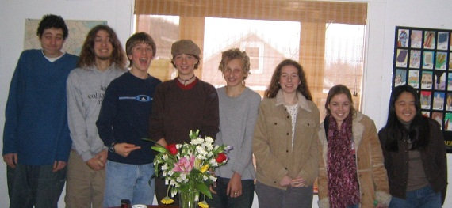

Popcorn and Page Turners: Running a Teen Book Group
By Sophia Sayigh

When Fred was 13, he was part of a book group run by another homeschooling mom. While he really liked being in the group, and the idea of reading and discussing literature with peers, the books they were reading were too easy for him. I decided that we could start our own book group, and we would read adult literature. I had never led a book group before - just had read a lot as a fiction lover - but was excited to give it a try.
I had a certain framework that I was comfortable with and I was careful to put this out to prospective members of the group. They were to join only if they were sincerely interested, not because mom or dad thought it would be a good idea. I would choose the books, with the readers in mind, of course. They were committing to doing all the reading, and they weren't to come to book group (which met on Wednesday afternoons for two hours) unless they had completed the reading. This applied to my own kid as well. Maybe a risk, as I might choose a book they didn't really want to read, but it was part of the package.
I would read aloud during group, and allow time for questions and discussions. Kids supplied their own books - sometimes I specified certain editions depending on a translation or version. I would assign reading for in-between meetings, usually between 50 and 150 pages. It was important to me that the kids invested some of their own time into doing the reading, if for no other reason than that they would have to employ some time management skills in getting the reading done on time. I always did the assigned reading as well.
Members of book group rotated bringing a snack to share. This grew to be a fun part of group, where members would try to one-up each other in the snack deliciousness factor. I am comfortable with food being eaten in my living room, so the food was out the whole time, and kids were also welcome to keep busy while I read aloud, as long as it didn't distract any other listeners. People knit, drew, Fred even practiced fingering on his guitar. Sometimes certain sets of kids got a little silly and I'd have to regain their attention. This was before the days when EVERYONE has a cell phone, so electronic devices weren't an issue. In a later group I did, kids were texting and receiving calls, so I had to ask kids to turn off their phones during group. I asked parents to call only if it was an emergency, and to call the house phone, and we would hear it and answer if it was for a book group member (yes, sometimes it was parents who were calling!).
My goal was to foster a group of kids who, over time, would grow comfortable asking questions and voicing opinions. To this end, I tried to be a good listener, and not be didactic in my running of the group. In general I did not have a goal or moral I wanted the kids to get out of a certain book. In fact, one of the things I loved most about book group was hearing the kids' perspectives on different books, and also getting to know these young individuals better through hearing their opinions and impressions. At the request of one member, I sometimes "quizzed" them on the books. I would find a quiz on Sparknotes or some similar web site or book, and ask them the questions, going around the room. Most of them found this to be fun (they could skip their turn if they didn't). I found it to be useful in figuring out where maybe something had missed their understanding, and I could take time to explain. I always checked in to see that they'd understood the reading done on their own before piling more on top of it. I would normally try to exhaust what the kids thought first, with me explaining plot or background if necessary. I think as time passed, the kids knew that I wasn't trying to shove anything down their throats or judge them, and then I could be part of the discussion too, but I tried to wait my turn. I think when adults speak, a lot of times kids hold their tongues. Sometimes I would get excited about some piece of literary criticism or some such and share that with them.
I researched the books before choosing them, figuring out how many weeks it would likely take to get through each, and how many pages I might assign. I was usually able to read aloud about 50 pages in two hours. I also found questions that I thought would provoke discussion or made up my own. How did I choose the books? I googled "college bound reading list" and found several to draw ideas from. Some books I chose because I remembered them being favorites of mine as a young teen (Frankenstein, Dracula, Wuthering Heights) or older (One Hundred Years of Solitude, A Confederacy of Dunces, The Brothers Karamazov, Beloved). Some I chose because they were classics I had never read myself (Madame Bovary, Things Fall Apart, Mrs. Dalloway). I tried to choose a variety of genres and time periods. I have more books left on my list of "Want to Reads" than I do on the list of books we read. So many books, so little time.
We always ended a trimester with a play reading. We read at least two Shakespeare plays a year. First the kids were assigned to read a Lamb's Tale or other retelling of a Shakespeare play. Then we would watch a movie version. The kids would make secret ballots saying what parts they wanted to read. I would then try to assign parts in a balanced way, pleasing as many people as possible, and being mindful of not always giving the lead roles to the same kids. For Shakespeare, people had to read multiple roles, and I read as well.
We met from September to June in three sessions. The first went from September - December with a break over the holidays, the second from January to March with a couple weeks off, and then from April - June. I did this for five years with Fred, and for one with Nadia (she was in another similar group for two years before I took it over).
I inherited Nadia's book group, so I didn't build it from the beginning. With Fred's, I thought of kids he knew who were of similar ages whom I thought might be interested and asked them if they'd like to join. There was no charge to be in the group. I made it clear that we would be reading adult level literature. I only had so much space in my living room, so the number of participants was limited to eight or nine. Being at a somewhat similar intellectual age was important. In general people heard about it by word of mouth, so if a spot opened, there was usually someone waiting in the wings to fill it. A couple of times, when a space became available, a younger kid wanted to try out book group, but unless they could keep up with the content and pace, they dropped out.
I did not try to please all the people all the time. Some people didn't like that they didn't get to pick the books, so my book group wasn't for them. The way I figured it was I needed to be enjoying myself, and frankly, I had set the whole thing up to meet my child's needs. I wasn't going to dumb down reading or choose content based on personal preferences. Sure, some of the boys were yawning through Persuasion, and I had to agree that Wuthering Heights had lost some of its luster since I had worshipped it at 12. Beloved was a struggle for some, and Moby Dick is truly a whale of a book! But we got through them all, and I don't know that we would have if we hadn't known Wednesday afternoon was waiting for us, and we wanted to be a part of it, and being a part of it meant you read or listened to what had been assigned that week.
In retrospect, my kids read and enjoyed and absorbed an amazing array of literature, in itself a wonderful thing. No doubt all that reading helped them as writers. Fred especially was inspired to go on "jags" with certain authors he was introduced to - Dickens, Nabokov. Both kids consider live Shakespeare a treat, and have favorite plays and characters. Both their college application portfolios boasted an impressive reading list - and not the annotated or cartoon versions either! I was pleased to hear report that Fred and others in his group were easily the best-read students in their college freshman English classes. For my part, it was a pleasure to be able to share my love of reading with these young people and be part of their growing up, getting to know them in a different way from just being Fred or Nadia's mom. But maybe best of all, if I had to pick just one thing, is that I had this shared experience with my teenagers. Whatever else was going on, we had a common ground to connect on, to banter over, to commiserate about (Oh Raskolnikov!). Such a nice thread to have woven through those sometimes turbulent teen years, and we'll have it forever.
Sophia Sayigh serves on the board and is a co-founder of Advocates for Home Education in Massachusetts. She co-wrote Unschoolers, a fictional book about homeschooling. Her two children, now grown, didn't go to school until college. Home was and is filled with pets, music, books, computers, and conversation.
Book List |
||
Fall 2002 |
Spring 2005 |
Fall 2008 |
| To Kill a Mockingbird | Walden | The Namesake |
| Frankenstein | The Haunting of Hill House | The Overcoat |
| 1984 | One Flew Over the Cuckoo's Nest | The Mysterious Stranger |
| Much Ado About Nothing | A Midsummer Night's Dream | The Metamorphosis |
| The Scarlet Letter | ||
Winter 2003 |
Fall 2005 |
Romeo and Juliet |
| All Quiet on the Western Front | Beloved | |
| Great Expectations | Crime and Punishment | Winter 2008 |
| The Great Gatsby | Catch 22 | Chronicle of a Death Foretold |
| The Importance of Being Earnest | King Lear | The Brothers Karamazov |
| Beautiful Things That Heaven Bears | ||
Spring 2003 |
Winter 2006 |
A Midsummer Night's Dream |
| Haroun and the Sea of Stories | One Hundred Years of Solitude | |
| Lord of the Flies | If Beale Street Could Talk | Spring 2009 |
| Persuasion | Madame Bovary | Slaughterhouse Five |
| MacBeth | No Exit | Dante's Inferno |
| The Bald Soprano | Lord of the Flies | |
Fall 2003 |
Mrs. Dalloway | |
| Dracula | Spring 2006 |
No Exit |
| The Mysterious Stranger | Pale Fire | |
| Metamorphosis | In Cold Blood | |
| Wuthering Heights | Jasmine | |
| Twelfth Night | Clockwork Orange | |
| Henry IV | ||
Winter 2004 |
||
| The Once and Future King | Fall 2006 |
|
| Siddhartha | Women in Love | |
| Things Fall Apart | Duplicate Keys | |
| Ethan Frome | The Secret Life of Walter Mitty | |
| The Dead | ||
Spring 2004 |
A Streetcar Named Desire | |
Romeo and Juliet |
||
The Mists of Avalon |
Winter 2007 |
|
The Tempest |
Jane Eyre | |
Cat's Cradle |
The Sorrows of Young Werther | |
| The Loved One | ||
Fall 2004 |
Julius Caesar | |
Dr. Jekyll and Mr. Hyde |
||
The Handmaid's Tale |
Spring 2007 |
|
A Confederacy of Dunces |
The Stranger | |
The Catcher in the Rye |
Tom Jones | |
Hamlet |
Rhinoceros | |
| A Clockwork Orange | ||
Winter 2005 |
Jasmine | |
The Accidental Tourist |
A Good Man Is Hard to Find | |
Moby Dick |
||
Dandelion Wine |
||
The Lottery |
||
Death of a Salesman |
||